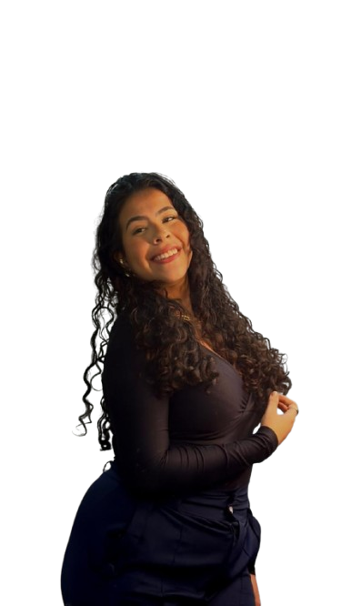

Cobertura em tempo real
Conteúdo ágil para acompanhar agendas, eventos e bastidores.
Captação, edição e cobertura em tempo real para marcas, eventos e experiências que merecem ser lembradas.

Captação de momentos, detalhes e atmosfera com linguagem vertical pensada para redes sociais.
Vídeos institucionais, eventos e storytelling produzidos para diferentes contextos.
Conteúdo institucional
Institucional & captação
Dra. Jessica Ramos • Institucional
Conteúdo institucional
Cobertura de evento
Lifestyle & storytelling
Sou Isabelly Barbosa, tenho 21 anos e encontrei na comunicação uma profissão que realmente amo.
Sou proprietária da Elegance Group Media e atuo com criação de conteúdo, produção audiovisual e social media, transformando ideias, momentos e histórias em conteúdos pensados para conectar pessoas e marcas.
Tenho experiência com conteúdo institucional, cobertura de eventos, captação mobile, Reels, Stories, bastidores e edição de vídeos, sempre buscando unir estratégia, criatividade e atenção aos detalhes.
“Criar, registrar e comunicar fazem parte de quem eu sou.”
Conteúdo ágil para acompanhar agendas, eventos e bastidores.
Vídeos verticais com atenção a enquadramento, movimento e narrativa.
Seleção e edição de materiais pensados para publicação nas redes.
Stories, Reels, conteúdo institucional e comunicação digital.
Linguagem visual, enquadramento e construção de imagens.
com Gabor Lorenzoni
Produção e captação audiovisual utilizando dispositivos móveis.com Maria Laura
Conteúdo dinâmico, movimento e composição visual.Para trabalhos, coberturas e projetos de conteúdo, fale diretamente comigo.
Chamar no WhatsApp(61) 99690-8717